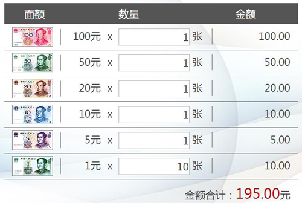

描述
- 数据网格由一行或多行单元格组成，用于显示数字和其他项以便快速引用和分析。
示意图

行为状态
- 数据网格从行为状态上表格分为：可操作单元格的数据网格（可操作数据网格）和不可操作单元格的数据网格（不可操作数据网格）。
-
可操作数据网格：通常使用在数据信息要被录入、新增、修改、删除、等应用场景中。
可操作数据网格（纸币）
可操作数据网格（硬币）

- 不可操作数据网格：通常使用在数据信息只是被浏览或查看。
不可操作数据网格（纸币）
不可操作数据网格（硬币）
不可操作数据网格（纯文本）
不可操作数据网格（具有行选中、分页器）
使用规范
- 若表格有弹出窗口，弹出窗口一般为模态窗口。
- 如数据网格的显示行数小于设定行数，数据网格下方的控件自动上升至当前数据网格下方。
- 显示内容超过一页时出现分页器；
使用指南
- 表格设计应让用户易读，易扫视，易比较；
- 当表格的列较多，超出展示区域，显示水平滚动条，可拖动滚动条查看信息，也可使用手指在数据网格上左右滑动查看信息；
- 当表格的列非常多，拖动水平滚动条也不方便查看信息时，建议将关键信息放在表格单元格中，在表格关联的弹出窗口中查看完整的表格信息；
- 尽量在需求处就对数据网格的功能进行简化，减少数据网格中承载复杂的逻辑关系；